El software que facilitará la gestión legal de tu firma observa lo que podrás hacer con nosotros
Siempre es importante saber como están las cosas y con NASBU no dejas de atender tus asuntos importantes.
Mantendrás siempre organizada todo la información relacionada a los expedientes de tu clientes.

Como compartir expedientes con amigos, facturación, Timer para control de Hrs. y más.